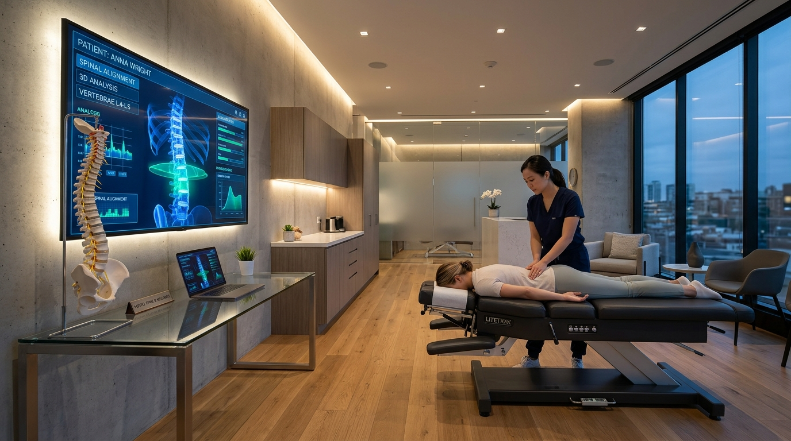
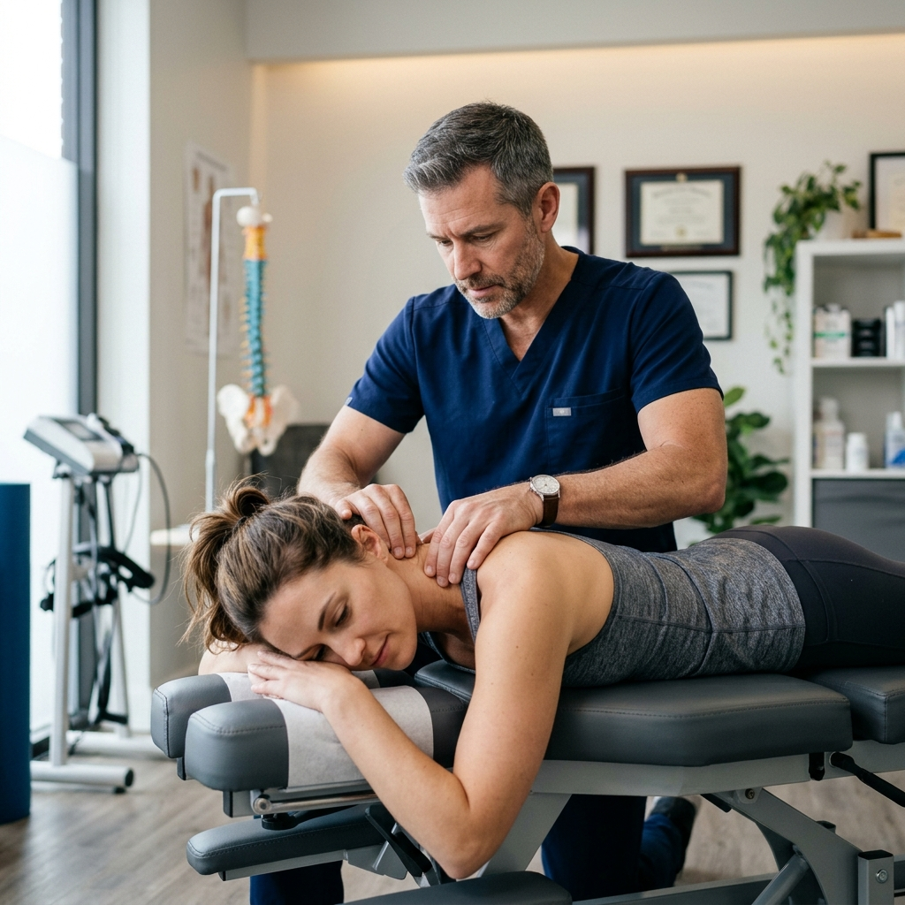

Recupera tu movilidad y alivia el dolor de espalda y cuello en Tuxtepec.
Atención clínica personalizada por el Dr. Dany, consultorio en San Juan Bautista Tuxtepec, Oaxaca. Combinamos diagnóstico médico formal con maniobras biomecánicas suaves para devolverle el bienestar a tu cuerpo.

Técnicas suaves y no invasivas
Formación Médica
Diagnóstico clínico con base científica
Lectura de Radiografías
Evaluación detallada de tu columna
Ajustes Seguros
Maniobras manuales suaves y sin dolor
Trato Humano
Atención personalizada y sin prisas

"No solo trato el síntoma, entiendo el origen de tu molestia."
Hola, soy el Dr. Dany. Combino la evaluación médica formal con la terapia quiropráctica para ofrecerte un tratamiento seguro, humano y enfocado en devolverte tu calidad de vida.
"La salud no se posterga. Mi compromiso es ayudarte a vivir y moverte sin dolor desde la primera consulta."
Descarte de contraindicaciones y valoración médica antes de cualquier ajuste.
Alivio mediante alineación articular, descompresión y relajación muscular.
Protocolos adaptados a tu edad, estilo de vida y nivel de dolor.
Tratamientos para el Bienestar de tu Columna
Cada sesión se adapta a tu condición, historial médico y nivel de molestia.
Ajuste Integral de Columna
Corrección articular para descomprimir nervios, mejorar la postura y devolver la movilidad natural.
- Libera presión en discos vertebrales
- Movilidad y ligereza inmediata
- Disminuye dolores crónicos de espalda
Alivio de Ciática y Lumbalgia
Descompresión de la zona lumbar para aliviar el dolor, ardor o entumecimiento hacia glúteo y pierna.
- Descompresión de raíces L4-L5-S1
- Alivio de punzadas y rigidez
- Recuperación de la marcha y descanso
Ajuste Cervical y Cuello
Liberación de rigidez en cuello, hombros y dolores de cabeza provocados por tensión y pantallas.
- Mayor soltura al girar el cuello
- Alivio de cefaleas tensionales
- Reduce pesadez sobre los hombros
Descarga Muscular Miofascial
Terapia manual profunda enfocada en disolver nudos, contracturas severas y sobrecarga física.
- Eliminación de contracturas dolorosas
- Ideal para deportistas o estrés laboral
- Reactiva circulación y oxigenación
Valoración con Radiografías
Análisis médico exhaustivo de tus estudios de imagen y pruebas de movilidad antes de intervenir.
- Revisión de placas y resonancias
- Explicación clara y sin rodeos
- Plan seguro y 100% individualizado
Reeducación Postural
Pautas ergonómicas y rutinas de movilidad personalizadas para proteger tu columna y evitar recaídas.
- Ejercicios guiados para casa
- Consejos para trabajo y descanso
- Bienestar físico a largo plazo
Consulta Médica General
Atención clínica primaria, diagnóstico certero, tratamiento y seguimiento integral con cédula profesional.
- Evaluación clínica completa y signos
- Manejo de enfermedades comunes y dolor
- Prescripción médica responsable
Homeopatía Clínica
Terapéutica médica complementaria con sustancias dinamizadas para estimular la autorrecuperación de tu cuerpo.
- Tratamiento natural y sin efectos secundarios
- Enfoque individualizado en cuerpo y mente
- Ideal para padecimientos crónicos y defensas
Medicina Alternativa e Integrativa
Abordaje complementario que une terapias naturales, fitoterapia y equilibrio energético con criterio médico.
- Armonización y bienestar biológico integral
- Terapias desintoxicantes y complementarias
- Prevención del desgaste físico y emocional
¿Dónde Sientes Molestia? Identifica tu Caso
Selecciona la zona afectada para ver una recomendación médica inicial.
Ajuste Cervical y Movilización Suave
La rigidez en cuello suele deberse a sobrecarga por tensión o pantallas. Una movilización suave ayuda a recuperar el rango de giro y aliviar la pesadez tensional.
Casos Clínicos en TikTok
Transparencia y empatía. Conoce cómo explicamos y tratamos molestias reales en consulta.
¿Cómo es tu Consulta Médica?
Un proceso claro, empático y profesional de inicio a fin.
Diagnóstico Clínico
Revisamos tu historial médico, radiografías y la movilidad articular de cada vértebra.
Ajuste Personalizado
Maniobras manuales suaves y controladas para liberar presión y devolver el equilibrio al cuerpo.
Plan y Recomendaciones
Te enseñamos ejercicios de movilidad y consejos ergonómicos para evitar recaídas.
Lo que Dicen Nuestros Pacientes
Personas que recuperaron su movilidad y bienestar diario.
"Llevaba semanas con dolor lumbar fuerte al manejar. Desde la primera sesión sentí un alivio notable. El Dr. Dany es súper profesional y muy humano."
"Tenía dudas sobre los ajustes en el cuello, pero su formación médica me dio total confianza. El ajuste cervical me quitó la tensión y los dolores de cabeza."
"Excelente trato. No te atiende a las prisas, revisó mis estudios con calma y la descarga muscular me devolvió la energía. Lo recomiendo ampliamente."
Preguntas Frecuentes
Respuestas rápidas para resolver tus dudas antes de tu cita.
No. Las técnicas manuales realizadas por un médico son suaves, precisas y controladas. La mayoría de los pacientes sienten alivio y ligereza de forma inmediata.
Cuentas con el respaldo de un diagnóstico clínico formal. Identifica con criterio si una molestia es muscular, articular o neurológica antes de realizar cualquier procedimiento.
Se llama cavitación articular: es la liberación inofensiva de una burbuja de gas dentro del líquido articular al descomprimirse. No causa dolor ni desgaste.
Muchos pacientes sienten mejoría desde la primera consulta. Según tu condición, historial y hábitos, el Dr. Dany te sugerirá un plan claro y honesto.
Sí, previa valoración con tus estudios de imagen. El Dr. Dany determinará con responsabilidad si eres candidato o si requieres una indicación específica.
Da el Primer Paso para Vivir Sin Dolor
Visítanos en el consultorio o escríbenos directamente por WhatsApp para agendar tu cita.
Prol. 20 de Noviembre #64
Col. Centro, CP 68300
San Juan Bautista Tuxtepec, Oaxaca
México
Lun - Vie: 9:00 am - 7:00 pm | Sáb: 9:00 am - 2:00 pm
¿Prefieres atención inmediata?
Chatear por WhatsAppSolicitar Cita
Ingresa tus datos y te responderemos a la brevedad.